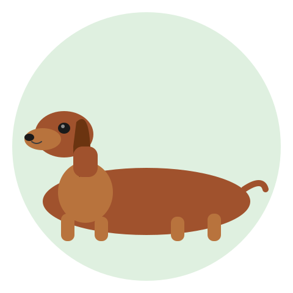
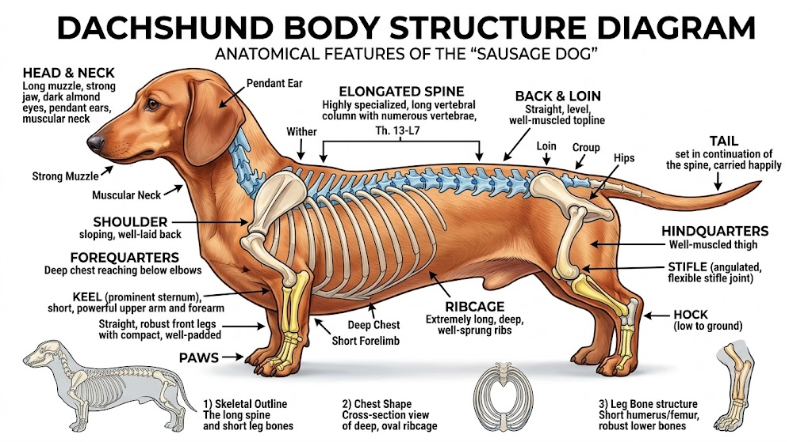
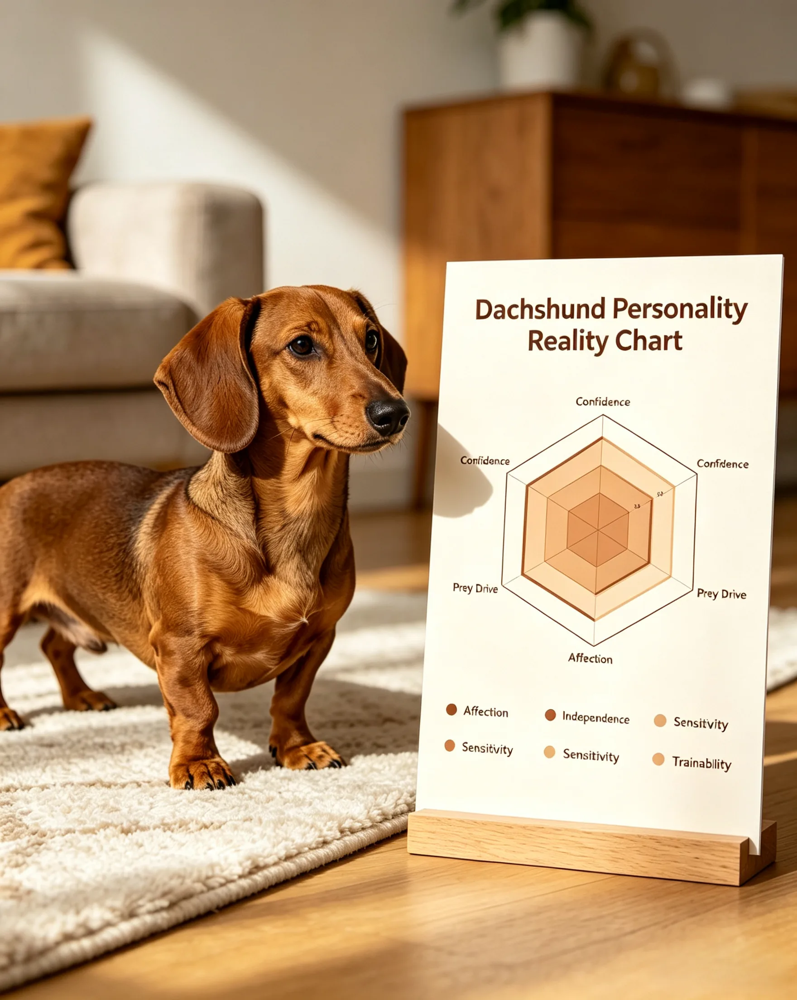
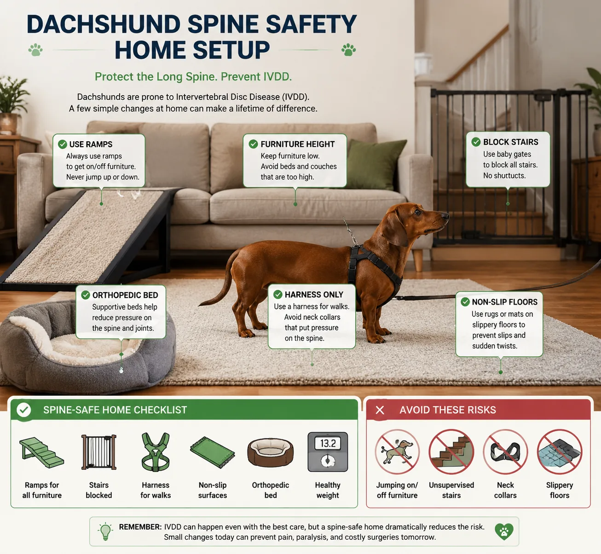
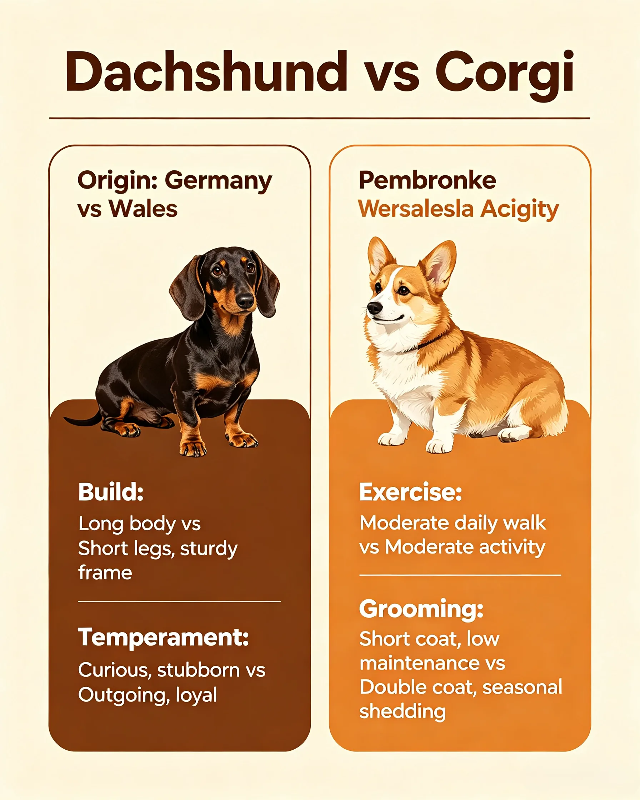

The internet's favorite wiener dog has a spine like a string of pearls. One wrong jump changes everything. | 2026-07-09 · MeltPet · 7 min read
✍️ By Sarah Mitchell Evidence-backed research by Sarah Mitchell.
✅ Veterinary sources reviewed by MeltPet Team All health claims cross-checked against peer-reviewed veterinary sources. See 📚 Sources at the bottom of this guide.
Last updated: 2026-07-09

That iconic silhouette — and the spine that makes it so fragile.
Your Instagram Feed Sold You a Lie. Here's What the Algorithm Left Out.
Scroll through #dachshund on any platform and you'll see a greatest-hits reel: tiny dogs in tiny sweaters, long noses poking out of blanket burrows, stubby legs powering across a beach at full gallop while their ears flap behind them like furry wings. It's weaponized cuteness. And it works — Dachshunds have been a top-10 AKC breed for over a decade, with registrations climbing every year.
What the algorithm doesn't show you: the dog who screamed when a guest picked him up wrong and is now on crate rest for six weeks. The $6,400 hemilaminectomy. The surrender paperwork that says "bit my toddler — she just wanted to hug him." The 3am barking at a raccoon three blocks away. The puppy who ate a sock and needed it fished out endoscopically because his body is 70% torso and things get stuck in there.
Dachshunds aren't a starter dog. They're a specialty breed with a specialty spine, a specialty personality, and a specialty set of rules that nobody follows until it's too late. This guide is about the rules.
What's Actually Going On Inside That Body
A Dachshund's defining physical trait — the long back and short legs — is the result of a genetic condition called chondrodysplasia, a form of disproportionate dwarfism. The same gene that gives Corgis, Bassets, and Pekingese their stubby legs. In a Dachshund, it produces a spine that's stretched across a normal number of vertebrae sitting on abnormally short limbs. The discs between those vertebrae aren't built to the same specification as a normal dog's. They start degenerating earlier. They calcify. And when they rupture, the spinal cord — which runs through a bony canal with almost no extra room — gets compressed.
That's IVDD. And it's not a random misfortune that strikes unlucky dogs. It's a structural vulnerability built into the breed's blueprint.

The long spine + short leg architecture that makes every Dachshund vulnerable to IVDD. The same gene that gives them that silhouette also produces abnormal disc material.
Dachshunds come in two sizes (standard: 16–32 lbs, miniature: 11 lbs and under) and three coats (smooth, longhaired, wirehaired). The coat types aren't just aesthetic — they correlate with temperament. Wirehaired Dachshunds tend to be the most terrier-like: feisty, busy, scrappy. Longhaireds are generally softer in temperament — a spaniel influence somewhere in the lineage. Smooths are the classic: confident, stubborn, uncomplicated. All of them share the same spine architecture and the same basic personality firmware: bold, independent, and utterly convinced of their own size.
The Personality People Fall For (and Then Surrender Over)

The gap between what Instagram shows and what you actually get. Every trait below has a table row — this is the visual summary.
Dachshund personality traits — internet perception vs. real-life experience across 6 key dimensions
Bravery
Fearless little hunter, so cute!
Your 14-pound dog will challenge a Rottweiler at the park. He will lose. He doesn't know that. This is not cute — it's dangerous, and it's your job to manage.
Loyalty
Velcro dog who loves you best
One-person loyalty is real and intense. A Dachshund often bonds hardest with a single person. Everyone else in the household is staff. This causes friction in families.
Intelligence
Clever, trainable, food-motivated
Clever, yes. Biddable, no. A Dachshund doesn't ask "what do you want me to do?" It asks "what's in it for me, and is that better than what I'm currently doing?" Training is negotiation. The food motivation is real, but so is the capacity to decide the treat isn't worth it.
Playfulness
Goofy, entertaining, always up for fun
Genuinely funny dogs with excellent comic timing. But play drive is medium, not high — a Dachshund doesn't need marathon fetch sessions. Two 15-minute walks and a tug session, and it's nap time inside a blanket for the next four hours.
Alertness
Good watchdog
Excellent watchdog. The problem: everything is worth watching for. Doorbell. Squirrel. Wind. A car door three streets over. The bark is shockingly loud for the chassis. Your neighbors will know you have a Dachshund. So will your neighbors' neighbors.
Stubbornness
"They have so much personality!"
House-training a Dachshund takes months longer than a Lab. They do not go outside in the rain. They do not perform on command. They will look you in the eye, understand exactly what you're asking, and choose to continue digging in the couch cushion. This is the breed, not a training failure.
Here's a stat that doesn't make it into the AKC breed brochure: a 2008 study in Applied Animal Behaviour Science found Dachshunds were among the breeds most likely to show aggression toward both strangers and their owners. The same study noted they scored high on "owner-directed aggression." Before you recoil: this is almost always manageable aggression — resource guarding, handling intolerance, fear snapping. It's not random mauling. But it's real, it's well-documented, and it's why this breed needs an owner who reads dog body language fluently. A Dachshund telegraphs its discomfort for weeks before escalating to a bite. People who miss those signals end up surprised. The dog wasn't.
The Spine: Everything Changes When You Live With a Back-Prevention Lifestyle
If you get a Dachshund, you reorganize your home around its spine. This sounds dramatic. It's not.

Four non-negotiable spine safety habits: ramps on every elevated surface, baby gates at all stairs, Y-shaped harness only, and two-handed carry every time.
No jumping off furniture. Ever. Not the couch, not the bed, not the armchair. A single jump down from sofa height generates enough spinal compression to herniate a vulnerable disc. You buy ramps — plural. Couch ramp. Bed ramp. Deck ramp if you have stairs to the yard. A good foam ramp with a washable cover runs $40–90 each. You need at least two. You train the dog to use them by making every ramp journey end in a treat. This takes weeks, because — see previous section on stubbornness.
No stairs. If you live in a third-floor walkup with no elevator, do not get a Dachshund. Each stair is a mini-jump, a repeated compression on discs that were already breaking down when the dog was two years old. Baby gates at the top and bottom of every staircase in your home. Carry the dog up and down. Support both ends — one hand under the chest, one under the hindquarters. Never let the spine dangle.
Harness, never a collar. A collar puts pressure directly on cervical vertebrae when the dog pulls — and Dachshunds pull. A well-fitted Y-shaped harness distributes force across the chest. Ruffwear, Puppia, and Gooby all make harnesses that fit the deep chest and narrow waist of a Dachshund. Expect to try three before you find one that doesn't slip.
Weight control is spine protection. Every extra pound is additional load on discs that are already structurally compromised. A Dachshund should have a visible waist when viewed from above and you should be able to feel — not see — the ribs with light pressure. The difference between a 14-pound miniature and a 17-pound miniature is the difference between a spine that might make it to 15 and one that herniates at 6. Measure food in grams, not scoops. Use a kitchen scale.
Learn the early signs. A Dachshund with early IVDD doesn't necessarily scream. More often, it goes quiet. Reluctance to jump up or go down stairs. A hunched or arched back. Tense abdomen. Yelping when picked up or when shifting position. Trembling for no obvious reason. Dragging a paw or knuckling — walking on the top of the foot rather than the pads. That last one is an emergency. If your Dachshund shows any of these signs, crate rest starts immediately and the vet visit happens within hours, not days. The window for surgical intervention with the best outcomes is narrow.
IVDD Surgery: The Numbers Nobody Wants to Talk About at the Dog Park
The procedure is a hemilaminectomy — the surgeon removes a small section of vertebral bone to access the spinal canal and remove the disc material pressing on the cord. Cost: $3,500 to $8,000 depending on where you live and whether it's a standard or emergency surgery. That's per episode. A Dachshund who has had one ruptured disc has roughly a 30% chance of a second rupture — at a different disc space — within two years, according to a 2020 study in the Journal of Small Animal Practice.
Success rates are actually good — if the dog still has deep pain sensation in the affected limbs at the time of surgery. We're talking 80–95% return to walking. Dogs who have lost deep pain sensation (the vet pinches the toe webbing hard and the dog doesn't consciously react) have a 50–60% recovery rate with surgery and closer to 5% without it. Time is spinal cord. If your Dachshund goes down in the hind legs, you have hours, not days.
Conservative management — strict crate rest for 6–8 weeks, anti-inflammatories, pain medication, no surgery — works for mild cases. Grade 1 (pain only, no neurological deficits) and sometimes Grade 2 (mild wobbliness but can still walk). It doesn't work for dogs who can't move their legs. And crate rest means crate rest. The dog lives in a crate. You carry it outside to pee. It goes back in the crate. For two months. With a Dachshund. The stubbornness that's charming when they're stealing your spot on the couch becomes a genuine liability when they're supposed to be immobile.
If you're considering a Dachshund and can't stomach either a $7,000 emergency or a $40–70/month insurance premium with no spinal exclusions, stop considering. This is not one of those "think positive" situations. This is math. Roughly one in four will have a clinically significant episode. Four Dachshunds in a room — statistically, one of them is going down. The question isn't whether you'll face it. It's whether you're prepared for it when you do.
Monthly Costs: Small Dog, Not-Small Bills
Estimated monthly cost of owning a Dachshund — food, prevention, insurance, grooming, ramps, and total
Food (premium small-breed kibble)
$18–32
A standard Dachshund eats about 1 cup per day. Go with a brand that has joint support (glucosamine/chondroitin). The extra $8/month on premium food is the cheapest spine insurance you'll ever buy.
Flea/tick/heartworm prevention
$15–28
Weight-based dosing. The mini size saves you a few bucks here compared to large breeds.
Pet insurance
$28–60
Read the policy. Confirm NO spinal exclusions and NO breed-specific exclusions. Many insurers will happily sell you a policy that excludes "pre-existing" IVDD — which they argue exists from birth in chondrodystrophic breeds. Get the exclusion list in writing before you pay.
Grooming
$0–40
Smooth: a rubber curry brush, $8 once. Longhaired: slicker brush and comb, plus occasional professional trim, $30–40/month. Wirehaired: hand-stripping twice a year, $60–100 per session.
Ramps & gear (amortized)
$8–15
Two good ramps ($120–180 total), replaced every 3–4 years as foam degrades.
Treats, toys, misc
$10–20
Puzzle toys are your friend. A Dachshund with a snuffle mat is a quiet Dachshund. For 10 minutes.
Total (excluding emergency reserve)
$79–195
Wide range because insurance and grooming vary so much by coat type and location.
One cost that's genuinely lower: a Dachshund's destructive capacity is measured in socks and throw pillows, not drywall and door frames. When a 15-pound dog chews something out of frustration, the bill is smaller than when a 70-pound Lab does it.
Health Beyond the Spine
Dental disease. Small mouths, crowded teeth. Periodontal disease is extremely common. Annual dentals under anesthesia, daily tooth brushing if you can manage it (with a Dachshund — good luck), and dental chews. Budget $300–600 for a dental cleaning every 1–2 years.
Patellar luxation. The kneecap pops out of its groove. Common in small breeds. Mild cases need monitoring. Severe cases need surgery — $1,500–3,000 per knee.
Obesity. Dachshunds gain weight easily and carry it disastrously. A fat Dachshund is a spinal catastrophe waiting to happen. No table scraps. No "just a little piece of cheese." Everyone in the household must be on the same page about this. One person sneaking treats undoes everything.
Lafora disease (miniature wirehaired specifically). A form of inherited epilepsy that causes jerking, head bobbing, and eventually dementia-like symptoms. A DNA test exists. For miniature wirehaireds, it's non-negotiable. The condition is devastating and untreatable.
Lifespan: 12–16 years. That's longer than most breeds the same size. It's also longer than the average dog owner's attention span. A Dachshund purchased on a whim at 25 often outlasts the relationship, the apartment, and the job that made it seem like a good idea.
Dachshund vs. Corgi: Both Long, Both Low, Totally Different
People cross-shop these two because they're both short-legged, long-bodied herding/hunting dogs with big ears and bigger personalities. But the day-to-day experience is not the same:

Dachshund vs. Pembroke Welsh Corgi — both long, both low, completely different daily experience. See the table below for full details.
Dachshund vs. Pembroke Welsh Corgi — size, energy, trainability, barking, spine risk, kid-friendliness, shedding, and purchase price
Size
11–32 lbs (mini vs. standard)
25–30 lbs
Original job
Hunting badgers underground
Herding cattle by nipping heels
Energy
Medium. Two walks + naps.
High. Needs a job. Will invent one if not provided. Usually involves herding your children.
Trainability
"What's in it for me?"
"What's next? Give me more work."
Bark level
Loud, frequent, triggered by everything
Loud, frequent, triggered by movement
Spine risk
IVDD — roughly 1 in 4
IVDD and DM (degenerative myelopathy) — lower incidence than Dachshunds
Kid-friendliness
Selective. No grabby toddlers.
Better — but the herding nipping at running children's heels is real and must be trained out.
Shedding
Low to moderate (coat-dependent)
Heavy. Year-round. Legendary. Fur tumbleweeds in every corner.
Purchase price
$800–2,500
$1,200–3,000
A Dachshund wants to burrow under a blanket and guard the perimeter from squirrels. A Corgi wants to organize the household and enforce the schedule. Know which energy you're signing up for.
📚 Sources
Peer-reviewed veterinary research on Dachshund genetics, IVDD, and behavior.
Packer, R.M.A., et al. (2016).Impact of facial conformation on canine health: Dachshund neurological and intervertebral disc disease. Canine Genetics and Epidemiology.
Brown, D.C., et al. (2020).Recurrence of intervertebral disc herniation in Dachshunds following hemilaminectomy. Journal of Small Animal Practice.
Duffy, D.L., Hsu, Y., & Serpell, J.A. (2008).Breed differences in canine aggression. Applied Animal Behaviour Science.
Brisson, B.A. (2010).Intervertebral disc disease in dogs. Veterinary Clinics of North America: Small Animal Practice.
Dachshund Club of America.Health & Genetics: IVDD in Dachshunds. dachshundclubofamerica.org
OFA (Orthopedic Foundation for Animals).Dachshund Breed Health Statistics. ofa.org